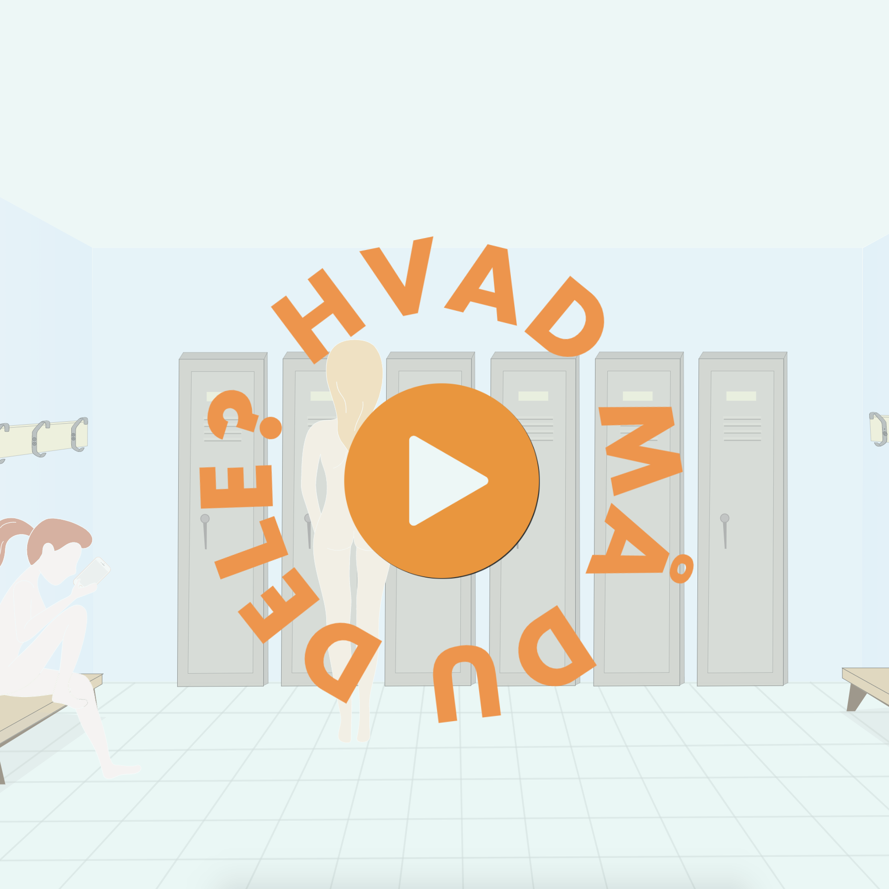

I temaet grundlæggende animation, fik vi til opgave at lave to spil - ét individuel og et gruppespil. Her ser vi gruppespillet, som skulle laves som var den en del af en kampagne fra Sex og Samfund under emnet billeddeling.
Spillet skulle her, som noget nyt fra det individuelle spil, brugertestes så vi ville være sikre på at få et produkt der passede til målgruppen. Vi lavede semi-struktureret interview af en teenager og lavede spørgeskema til deltagerne under testdagen. Spørgeskemaet blev brugt til at spore os ind på, om der var nogle huller i design, forståelse og læring af spillet.
Interviewet af teenageren blev lavet i starten af processen, for at spore os ind på et designvalg, der kunne henvende sig til målgruppen, som var folkeskoleelever i alderen 13-15 år.
Vi blev introduceret til trello, scrum og burn-down-chart, som er arbejdsværktøjer til strukturering. Det gav et godt overblik over alt der skulle nås på forskellige dage og for hele processen generelt.
Vi lavede inden vi kodede spillet et aktivitetsdiagram, for at sikre os at vi kendte userflowet. Vi lavede også et statemachine-diagram, da dette er et godt redskab til at strukturere javascriptkodningen.
